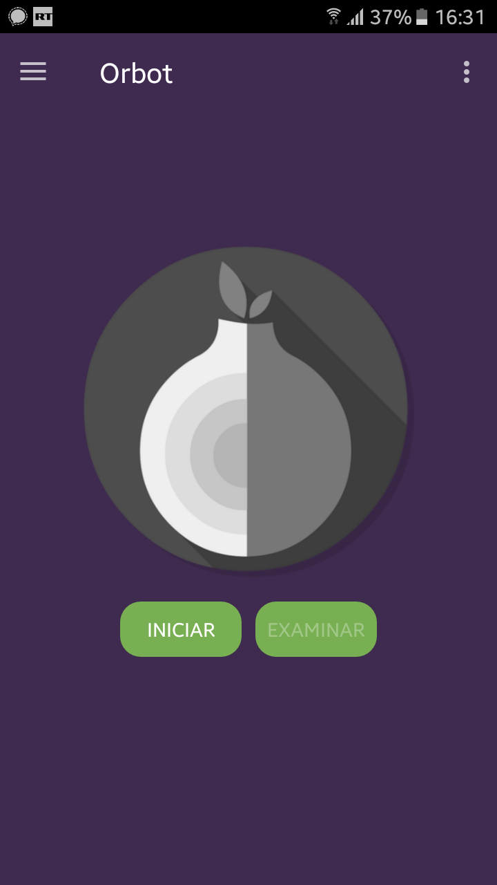
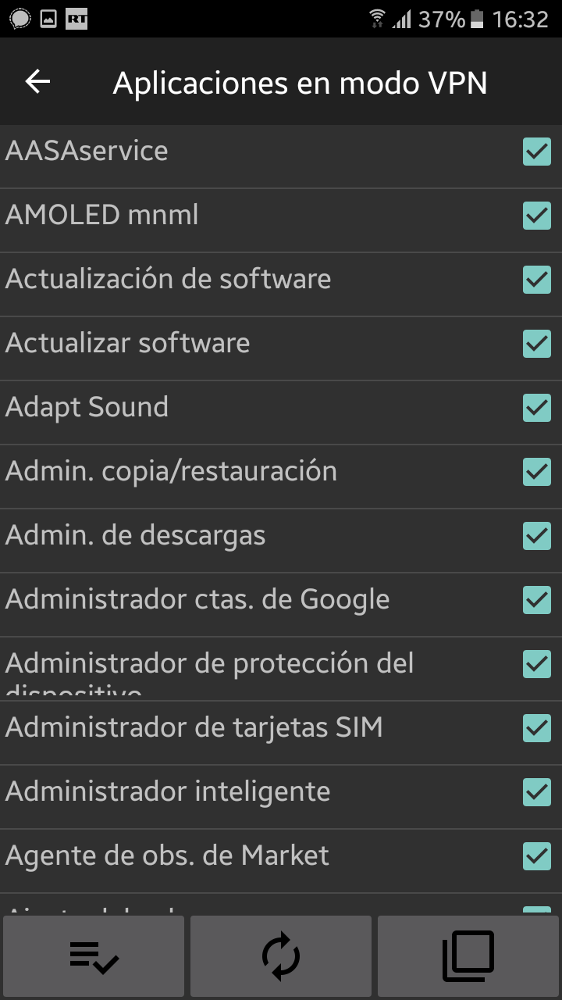
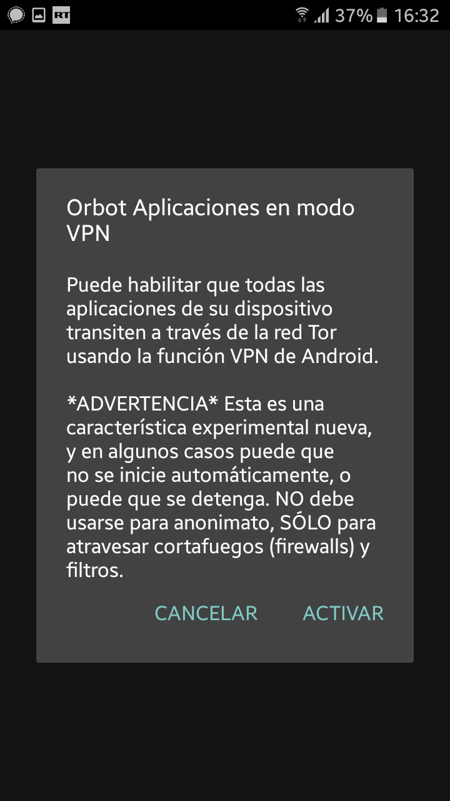

| |
 |
 |
 |
Vamos a “Configuración”, está en la parte izquierda superior y activamos “Aplicaciones en modo VPN”Una vez activada la opción, aparecerá un recuadro que nos dejará elegir las aplicaciones que queremos proxificar a travez de TOR.
Nota: Podemos seleccionarlas todas con la opción que aparece en la parte inferior izquierda.
Una vez seleccionadas las aplicaciones que deseemos proxificar con TOR, regresamos a la
ventana principal de Orbot, nos aparecerá una ventana donde nos anuncia que esa característica
es experimental y puede presentar inestabilidad, le damos en “Activar”.
|  |
|
 |
Acontinuación aparecerá un mensaje del sistema Android donde nos indica que una aplicación desea crear una conexión VPN,
damos en “Aceptar”. Este abrira un recuadro informando que estamos conectados a la red TOR. Una vez realizado comprobamos
que todo haya salido bien de dos maneras:
- Comprobamos que la opción “Aplicaciones en modo VPN” esté activada.
- Hacemos la prueba con nuestro navegador (o con las aplicaciones que hayamos seleccionado)
para verificar que el tráfico está siendo enrutado a travez de TOR.
- Podemos identificar los nodos a los que estamos conectados expandiendo
la notificación de nuestro sistema Android.
Recomendaciones.
- Si tienes acceso root a tu sistema android te recomendamos realizar la proxificación
transparente con Orbot en lugar de usar el modo VPN, esa opción la puedes encontrar
en las configuraciones de Orbot.
- En el momento de elegir las aplicaciones que desea proxificar, es recomendable que
elijas solo aquellas que lo requieran y no todo el sistema. Proxificando todas las
aplicaciones tu velocidad será bastante limitada y además puede traer problemas con
las aplicaciones propias del sistema.
- Si solamente deseas tener un navegador corriendo bajo el servicio TOR, instala Orfox
que trae integración directa con Orbot.
- Usa Firefox u Orfox en tu móvil para mayor privacidad y seguridad, te recomendamos
que leas el post Configurando Firefox para ser indetectable.
|